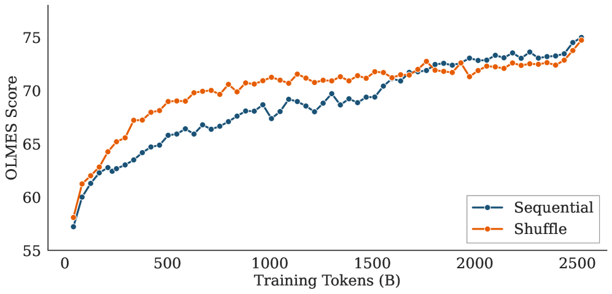
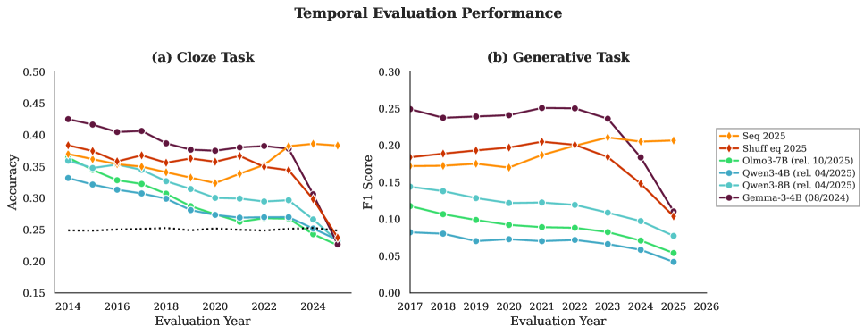

This paper shows that pre-training on temporally ordered Common Crawl snapshots produces 6B-parameter LLMs with significantly more up-to-date factual knowledge than standard shuffled pre-training, without sacrificing general language performance.
本文通过对比时间顺序预训练与随机打乱预训练，揭示了数据时间顺序对LLM事实知识时效性的关键影响。研究发现，按时间顺序训练6B参数模型能显著提升最新知识的准确性，且不损害通用语言能力，并提出了包含7000多个时间敏感问题的KairosQA基准。
Deep Note — kairos
Key Takeaways - Sequential pre-training on temporally ordered data yields models with more up-to-date and temporally precise knowledge than shuffled pre-training. - Shuffled pre-training peaks on older data, possibly due to increased factual repetition. - Sequential models match shuffled baselines on general language understanding and common knowledge. - A new benchmark (KairosQA) of over 7,000 temporally grounded questions is introduced for evaluating temporal alignment.
0) Metadata
- Title: Understanding Data Temporality Impact on Large Language Models Pre-training
- Alias: kairos
- Authors: Pilchen Hippolyte, Fabre Romain, Signe Talla Franck, Perez Patrick, Grave Edouard
- arXiv ID: 2605.22769
- Published:
- Links:
- Abs: https://arxiv.org/abs/2605.22769
- HTML: https://arxiv.org/html/2605.22769v1
- PDF: https://arxiv.org/pdf/2605.22769
- Tags: temporal-pre-training, data-ordering, llm-knowledge, continual-learning, kairosqa
- Domains: ai_safety, system_safety
- Rating: 4/5 (base 1 + quality 2 + observation 1)
1) Why-read
This paper shows that pre-training on temporally ordered Common Crawl snapshots produces 6B-parameter LLMs with significantly more up-to-date factual knowledge than standard shuffled pre-training, without sacrificing general language performance.
2) CRGP
C — Context
LLMs are typically trained on shuffled corpora, resulting in knowledge frozen at train time and poor temporal grounding. Prior work has explored continual learning and temporal alignment methods, but the impact of pre-training data ordering on temporal knowledge acquisition remains under-explored.
R — Related work
- Continual learning for incorporating new facts into LLMs (Li et al., 2025)
- Methods for improving temporal alignment (Park et al., 2025; Zhao et al., 2024)
- Standard shuffled pre-training pipelines (Touvron et al., 2023; Olmo et al., 2026)
- Temporal evaluation benchmarks (Zhao et al., 2024)
G — Gap
The specific limitation addressed is that current pre-training pipelines treat data as a timeless pool, shuffling all temporal contexts together. This obscures how data ordering affects the temporal distribution of factual knowledge in LLMs, leaving the impact of pre-training dynamics on time-sensitive knowledge poorly understood.
P — Proposal
The authors propose pre-training 6B-parameter Transformer models on temporally ordered Common Crawl snapshots (2018–2025) and compare them to a shuffled baseline (2020–2024). The key insight is that sequential training allows the model to establish linguistic and world knowledge in original temporal context, leading to more up-to-date and temporally precise factual knowledge.
---
4) Experiments
Main results
Sequential models matched shuffled baselines on OLMES benchmark for general language understanding. On KairosQA, sequential models achieved higher F1 on recent facts (2023–2024) while shuffled models peaked on older data (2020–2021). Relative F1 gains for sequential vs. shuffled on 2023–2024 period were positive across multiple open-source base models.
Ablation
Training on older 2018–2019 data yields inherently lower baseline model quality, confirming that sequential curriculum does not gain an artificial advantage from older data.
Limitations
['The shuffled baseline was trained on a narrower 2020–2024 window, while sequential used 2018–2025, introducing a temporal asymmetry.', 'The study only evaluates 6B-parameter models; scaling to larger sizes may yield different dynamics.', 'The benchmark KairosQA is limited to Wikidata facts and may not cover all types of temporal knowledge.']
5) Why it matters
- Directly addresses the need for LLMs with up-to-date knowledge, critical for applications like news summarization and question answering.
- Provides a simple, scalable method (temporal ordering) that requires no architectural changes, making it easy to adopt.
- Introduces a benchmark and evaluation protocol for temporal alignment, enabling systematic study of temporal knowledge in LLMs.
6) Next steps
- [ ] Evaluate sequential pre-training on larger model scales (e.g., 70B+ parameters) to test generalizability.
- [ ] Explore combining temporal ordering with continual learning techniques for dynamic knowledge updates.
- [ ] Apply the KairosQA benchmark to assess temporal alignment in other open-source and proprietary models.
- [ ] Investigate the effect of different temporal granularities (e.g., monthly vs. yearly snapshots) on knowledge freshness.
7) Scoring
4/5 = base 1 + quality 2 + observation 1
理解数据时间性对大型语言模型预训练的影响
主要结论 - 按时间顺序预训练使模型知识更及时、时间精度更高，优于随机打乱预训练。 - 随机打乱预训练在旧数据上表现更好，可能源于事实重复增加。 - 顺序模型在通用语言理解和常识任务上与随机打乱基线持平。 - 提出了包含7000多个时间锚定问题的KairosQA基准，用于评估时间对齐能力。
1) 阅读理由
本文核心主张是：按时间顺序预训练能显著提升LLM的事实知识时效性，关键发现是顺序模型在2023-2024年最新事实上的F1分数高于随机打乱模型，且通用性能不受影响。
2) CRGP（背景 / 相关工作 / 差距 / 方案）
上下文：LLM通常在打乱语料上训练，导致知识冻结在训练时，缺乏时间锚定。相关工作：持续学习（Li等人，2025）、时间对齐方法（Park等人，2025；Zhao等人，2024）、标准打乱预训练流程（Touvron等人，2023；Olmo等人，2026）、时间评估基准（Zhao等人，2024）。差距：当前预训练将数据视为无时间池，打乱所有时间上下文，掩盖了数据顺序对LLM事实知识时间分布的影响。提案：作者提出在时间顺序的Common Crawl快照（2018-2025）上预训练6B参数Transformer模型，并与打乱基线（2020-2024）对比。关键洞察是顺序训练让模型在原始时间上下文中建立语言和世界知识，从而获得更及时、更精确的事实知识。
3) 实验
主要结果：顺序模型在OLMES通用语言理解基准上与打乱基线持平。在KairosQA上，顺序模型在2023-2024年最新事实上的F1更高，而打乱模型在2020-2021年旧数据上达到峰值。顺序模型相对于打乱模型在2023-2024年期间的相对F1增益在多个开源基础模型上均为正值。
消融实验
消融实验表明，仅在2018-2019年旧数据上训练会导致模型质量固有下降，证实顺序课程并未从旧数据中获得人为优势。
局限性
['打乱基线仅在2020-2024年较窄窗口上训练，而顺序模型使用了2018-2025年，存在时间不对称。', '研究仅评估6B参数模型，扩展到更大规模可能产生不同动态。', 'KairosQA基准仅限于Wikidata事实，可能未覆盖所有类型的时间知识。']
4) 重要性
- 直接回应了LLM需要最新知识的需求，对新闻摘要和问答等应用至关重要。
- 提供了一种简单、可扩展的方法（时间排序），无需架构更改，易于采用。
- 引入了时间对齐的基准和评估协议，使LLM时间知识的系统研究成为可能。
5) 下一步
- [ ] 在更大模型规模（如70B+参数）上评估顺序预训练，测试泛化能力。
- [ ] 探索将时间排序与持续学习技术结合，实现动态知识更新。
- [ ] 应用KairosQA基准评估其他开源和专有模型的时间对齐能力。
- [ ] 研究不同时间粒度（如月度与年度快照）对知识新鲜度的影响。
![Figure 1 : Yearly temporal knowledge with Kairos. Relative gains in F1 score on KairosQA between the 2020–2021 and 2023–2024 periods for our sequentially pre-trained model versus other open-source base models (ordered by their release date with the most recent at the right). These results highlight that even for recently released open-source base models, shuffled pre-training leads to a temporal delay in knowledge; performance decays when querying recent facts, even those preceding the training cut-off. Conversely, sequential pre-training represents a significant step toward developing more up-to-date models.](figures/1205/fig_001.png)


![Figure 8 : Learning Dynamics on MMLU. Evolution of MMLU scores over 2.5T tokens. The Shuffle baseline exhibits higher efficiency in the mid-training phase, likely due to the stationary distribution of the data. The Sequential model steadily closes this gap, showing that chronological ordering alters the learning trajectory without compromising final model capacity. The two discontinuities at 200 200 B tokens for the Shuffle baseline and 400 400 B for the other one illustrate the emergence of improved abilities on the multiple-choice task.](figures/1205/fig_008.png)